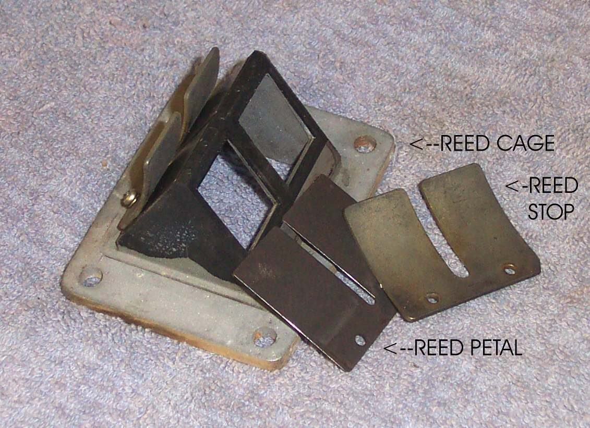
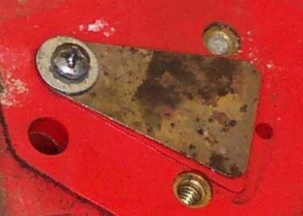
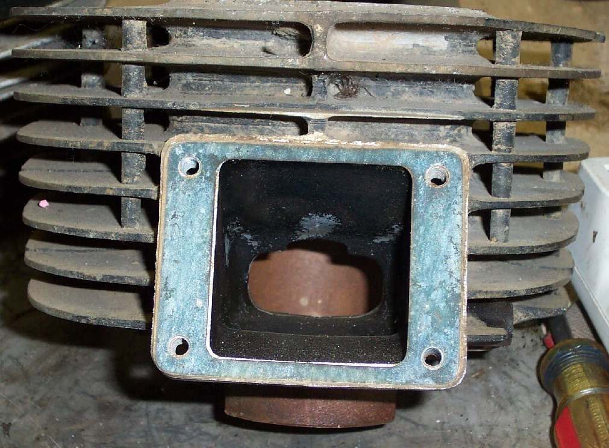

A reed valve is a one-way valve. On many two-stroke engines it sits in the intake path and lets mixture in but stops it being pushed back out of the carburettor when the piston goes down. A broken or stuck reed makes the engine very hard to start, or stops it starting at all. A few four-stroke engines also have one.
Safety
- Engine off and cool. Turn the fuel tap off and catch any fuel from the carburettor.
- Reed petals are thin and sharp. Hold them by the edges and never bend them.
Steps
- Remove the carburettor and the intake rubber or manifold to reach the reed block. See your bike's manual for the order.
- Note the position of the reed block, its gasket and any wires, so it can be refitted the same way.
- Look at the petals. They should sit flat against the cage with no gap of light showing, and spring back when lifted lightly.
- Count the petals. Motorcycle engines usually have four or six, but one to eight exists. Check that none is missing, cracked or has a chipped tip. A broken tip can fall into the engine, so if a piece is missing, tell a workshop before running the engine.
- Check the stop plate (the curved metal plate screwed over the petals). It limits how far each petal opens, and stops it bending until it snaps. It must be straight and firmly fixed.
- Check the petals for stuck gum, varnish and rust. Gently clean them. Do not fold or crease a petal.
- Replace the whole set if any petal is cracked, curled or will not seal. Fit a new gasket. Tighten evenly.
- Refit and test for a cold start and a clean idle.
Check your work
- The engine starts normally and idles without spitting fuel mist back out of the carburettor.
- Throttle response is even.